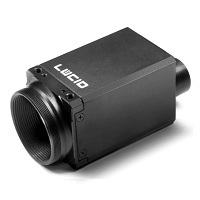
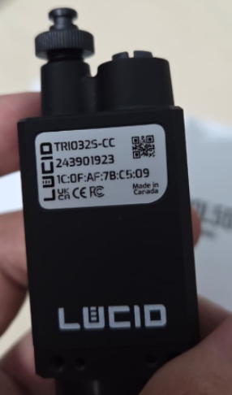

Câmera — Lucid Vision Triton¶

Driver ROS2 Humble para câmeras Lucid Vision Triton (GigE Vision), empacotado como container Docker. Suporta configurações com uma ou múltiplas câmeras, streaming JPEG comprimido via LAN ou VPN, gravação de bags e exportação de vídeo.
Adaptado do driver oficial Lucid Vision ROS2 (originalmente para ROS2 Eloquent).
Requisitos¶

- Câmera Lucid Vision Triton conectada via GigE (Ethernet)
- Arquivos ArenaSDK e arena_api em
resources/(veja Primeiros Passos) - Interface GigE configurada com
scripts/setup_network.sh
Início Rápido¶
# Configurar interface GigE (executar no host, não dentro do container)
sudo ./workspace/camera-lucid/scripts/setup_network.sh <interface-gige>
sudo ip addr add 169.254.1.1/16 dev <interface-gige>
xhost +local:docker
docker compose up -d camera
docker compose exec camera bash
# Dentro do container — verificar se a câmera é detectada
python3 /arena_camera_ros2/scripts/list_cameras.py
# Iniciar nó da câmera
ros2 run arena_camera_node start --ros-args \
-p serial:=<SEU_SERIAL> \
-p topic:=/camera/image_raw \
-p pixelformat:=bayer_rggb8
Estrutura de Diretórios¶
workspace/camera-lucid/
├── Dockerfile # Imagem ROS2 Humble + ArenaSDK
├── docker-compose.yml # Compose standalone da câmera
├── config/
│ ├── setup_fastdds.sh # Gera perfis unicast FastDDS
│ ├── cameras_example.yaml # Template de config multi-câmera
│ └── fastdds_*.xml # Perfis FastDDS
├── scripts/
│ ├── setup_network.sh # Ajuste de interface GigE (MTU, buffers, ring)
│ ├── list_cameras.py # Detectar câmeras conectadas
│ ├── start_camera.sh # Lançador do nó da câmera
│ ├── compress_bayer_stream.py # Relay de compressão JPEG
│ ├── focus_helper.py # Score de foco ao vivo
│ ├── record_video.py # Gravação direta em MP4
│ ├── bag_to_video.py # Converter bag ROS2 para MP4
│ └── convert_bag.py # Wrapper de bag-para-vídeo
├── notebook_setup/ # Ferramentas para o receptor
├── launch/
│ ├── multi_camera.launch.py # Lançar múltiplas câmeras por YAML
│ └── camera_streaming.launch.py # Launch otimizado para streaming
└── ros2_ws/src/
└── arena_camera_node/ # Nó ROS2 em C++ encapsulando ArenaSDK
Formato Bayer RAW¶
Câmeras Triton produzem BayerRG8 nativamente. Use pixelformat:=bayer_rggb8 para dados RAW sem cópia. Ao processar no OpenCV:
# bayer_rggb8 no ROS2 corresponde a BayerBG no OpenCV (nomes invertidos)
bgr = cv2.cvtColor(raw_img, cv2.COLOR_BayerBG2BGR)
Solução de Problemas¶
Câmera não detectada:
- Verifique o cabo Ethernet e a alimentação da câmera
- Execute
sudo ./scripts/setup_network.sh <interface>no host - Verifique se o IP do host está na mesma sub-rede:
ip addr show - Tente
ping <ip-da-camera>
Imagem cinza ou sem foco:
- Câmeras Triton não vêm com lente — é necessário instalar uma lente C-mount separadamente
- Ajuste o foco:
python3 /arena_camera_ros2/scripts/focus_helper.py
Nenhuma janela gráfica:
- Execute
xhost +local:dockerno host antes de iniciar o container
Erro de compilação: True not declared:
- Corrigido neste repositório (driver upstream tinha
Truedo Python em código C++)
Parâmetros do Nó¶
Todos os parâmetros são somente na inicialização — o nó deve ser reiniciado para aplicar qualquer alteração.
| Parâmetro | Tipo | Descrição | Padrão |
|---|---|---|---|
serial |
int | Número de série da câmera | primeira disponível |
topic |
string | Nome do tópico ROS2 | /arena_camera_node/images |
pixelformat |
string | bayer_rggb8, rgb8, bgr8, mono8, … |
rgb8 |
width |
int | Largura da imagem em pixels | máximo da câmera |
height |
int | Altura da imagem em pixels | máximo da câmera |
gain |
float | Ganho do sensor em dB | 0.0 |
exposure_time |
float | Exposição em microssegundos | padrão da câmera |
frame_rate |
float | Taxa de aquisição alvo (FPS) | padrão da câmera |
trigger_mode |
bool | true = modo gatilho, false = contínuo |
false |
qos_reliability |
string | reliable ou best_effort |
reliable |
Interação entre frame_rate e exposure_time¶
A taxa de frames efetiva é limitada pelo menor entre: o valor de frame_rate ou 1 / exposure_time.
Exemplo — 33 FPS em resolução máxima:
ros2 run arena_camera_node start --ros-args \
-p serial:=<SEU_SERIAL> \
-p topic:=/camera/image_raw \
-p pixelformat:=bayer_rggb8 \
-p frame_rate:=33.0 \
-p exposure_time:=25000
Exposição de 25 ms permite até 40 FPS, então o limite de frame_rate de 33 FPS entra em vigor.
Usando o script de launch¶
./scripts/start_camera.sh <serial> <topic> <pixelformat> <largura> <altura> <ganho> <exposicao> <fps>
./scripts/start_camera.sh 12345678 /camera/image_raw bayer_rggb8 "" "" 0 25000 33.0
Argumentos "" vazios usam a resolução máxima da câmera.
Múltiplas câmeras¶
cp workspace/camera-lucid/config/cameras_example.yaml workspace/camera-lucid/config/cameras.yaml
# edite cameras.yaml com seriais e nomes de tópicos
ros2 launch /arena_camera_ros2/launch/multi_camera.launch.py \
config_file:=/arena_camera_ros2/config/cameras.yaml
Implantações em produção
Para muitas câmeras, use um switch gigabit com suporte a Jumbo Frame e configure IPs estáticos em cada câmera.
Streaming Multi-máquina¶
Por que perfis FastDDS são necessários¶
Quando uma máquina tem múltiplas interfaces de rede (ex: porta GigE da câmera + WiFi), o FastDDS anuncia todos os IPs como localizadores de dados. O assinante remoto pode então tentar enviar ACKs para o IP GigE da câmera (169.254.x.x), que não é acessível remotamente.
Comparação de largura de banda¶
| Método | Resolução | Taxa | Banda | Notas |
|---|---|---|---|---|
| RAW limitado | 1024×768 | 15 FPS | ~12 Mbps | Somente baixa resolução |
| JPEG comprimido q=80 | 2048×1536 | 33 FPS | ~35–45 Mbps | Res. máxima em taxa máxima (WiFi OK) |
| RAW completo | 2048×1536 | 33 FPS | ~825 Mbps | Requer link GbE |
Configuração¶
Máquina da câmera (publisher)¶
./workspace/camera-lucid/config/setup_fastdds.sh publisher <interface-streaming>
./workspace/camera-lucid/scripts/start_camera.sh <serial> /camera/image_raw bayer_rggb8 "" "" 0 25000 33.0
bash ./workspace/camera-lucid/notebook_setup/compress_stream.sh /camera/image_raw
Máquina receptora (Docker)¶
./workspace/camera-lucid/config/setup_fastdds.sh subscriber <interface-receptora>
sudo bash ./workspace/camera-lucid/notebook_setup/setup_firewall_receiver.sh 192.168.X.0/24
xhost +local:docker
docker compose up -d camera
docker compose exec camera bash
source /opt/ros/humble/setup.bash
python3 /arena_camera_ros2/notebook_setup/stream_viewer.py \
--topic /camera/image_raw --compressed
Streaming via VPN (NetBird)¶
O descobrimento por multicast não funciona através de nenhum túnel VPN. Use o FastDDS Discovery Server (recomendado) ou adicione initialPeersList manualmente:
<initialPeersList>
<locator>
<udpv4>
<address>10.X.X.X</address> <!-- IP VPN do peer remoto -->
<port>11811</port>
</udpv4>
</locator>
</initialPeersList>
Solução de problemas de streaming¶
Tópico visível mas 0 frames recebidos:
- Causa mais comum: FastDDS anunciando o IP da interface errada
- Execute
setup_fastdds.shem ambas as máquinas com a interface correta - Confirme com
tcpdump -i any udp port 7400que os pacotes chegam na interface certa
Gravação¶
MP4 Direto (recomendado)¶
python3 /arena_camera_ros2/scripts/record_video.py --output camera.mp4
# Pressione Ctrl+C para parar e finalizar o arquivo
Bag ROS2 (sem perdas, para pós-processamento)¶
A bag é armazenada em workspace/camera-lucid/bags/ no host (volume montado).